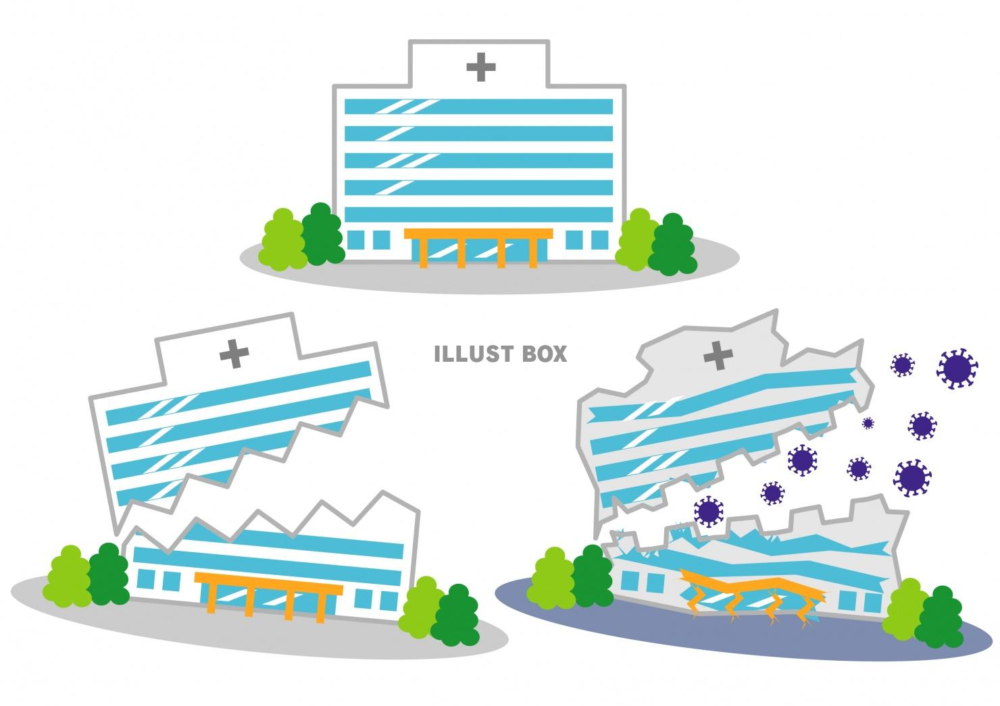

<!DOCTYPE html>
<html lang="ja">
<head>
  <meta charset="UTF-8">
  <title>新型コロナウイルスについて</title>
  <meta name="viewport" content="width=device-width, initial-scale=1">
  <link rel="stylesheet" href="https://maxcdn.bootstrapcdn.com/bootstrap/4.0.0/css/bootstrap.min.css">
  <link href="https://fonts.googleapis.com/css2?family=Montez&display=swap" rel="stylesheet">
  <link href="https://use.fontawesome.com/releases/v5.6.1/css/all.css" rel="stylesheet">
  <link rel="stylesheet" href="destyle.css">
  <link rel="stylesheet" href="style.css">
</head>
<body>
  <!-- ヘッダー -->
  <header id="header">
    <div class="header-container">
      <h1 class="header_title">
        <a href='index.html'>COVID-19</a>
      </h1>
      <div id="js-nav-toggle">
        <div>
          <span></span>
          <span></span>
          <span></span>
        </div>
      </div>
      <nav class='header_nav'>
        <ul id="nav-toggle-2">
          <li>
            <a href="index.html"><i class="fa fa-mountain"></i>新型コロナウイルスとは</a>
          </li>
          <li>
            <a href="symptom.html"><i class="fas fa-procedures"></i>各種症状</a>
          </li>
          <li>
            <a href="infection.html"><i class="fas fa-male"></i>感染者数</a>
          </li>
          <li>
            <a href="measures.html"><i class="fas fa-bookmark"></i>今後の対策</a>
          </li>
          <li>
            <a href="contact.html"><i class="far fa-envelope"></i>お問い合わせ</a>
          </li>
        </ul>
      </nav>
    </div>
  </header>
  <!-- 新型コロナウイルスとは -->
  <div class="container-fluid bg-light">
    <section class="row container" id="overview">
      <div class="col-12 top_title">
        <h4 class="subtitle">overview</h4>
        <h1 class="title"><i class="fas fa-mountain"></i>新型コロナウイルスとは</h1>
        <p class="title-text">実際、コロナウイルスとは何が危険なのでしょうか？<br>
          それを一緒に確認していきましょう。</p>
      </div>
      <section class="col-4 overview-container">
        <h1 class="elem-title">①２つの顔を持つ<br>ウイルス</h1>
        <p>感染しても、多くは症状が出ません。一方で、高齢者や持病をお持ちの方には、牙をむいて襲い掛かります。<span>その場合、肺炎が急速に悪化し、人工呼吸器が必要となります。</span></p>
        
      </section>
      <section class="col-4 overview-container">
        <h1 class="elem-title">②インフルエンザとは<br>違う恐ろしさ</h1>
        <p>元気な方でも急激に悪化し、亡くなることがあります。有効な薬はないため、患者さんは耐えるしかありません。<span>人工呼吸器が雄一の治療法であり、不足すると助かる命が助かりません。</span></p>
        
      </section>
      <section class="col-4 overview-container">
        <h1 class="elem-title">③異例の医療崩壊</h1>
        <p>イタリヤ、スペイン、アメリカでは、実際に人工呼吸器の不足、医療崩壊が起こっています。<span>日本はまだそこまでは至っていませんが、現場からは医療崩壊しそうだという悲鳴があがっています。</span></p>
        
      </section>
    </section>
  </div>
  <footer>
    <div class="text-white text-center bg-dark">
      keigo copyright 2020
    </div>
  </footer>
</body>
</html>